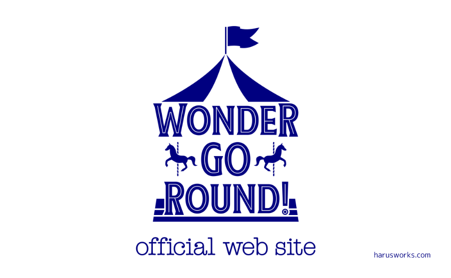

架空の男性アイドルユニットのロゴ

Webサイトのポートフォリオ用に想定した架空の男性アイドルユニットのロゴとして作成。
ラフイメージ作成を含め、Inkscapeを用いて7時間程度で作成しました。
アイドルのユニット名や、華やかで楽しいイメージなどからメリーゴーランドをモチーフにしています。
CDや各種宣伝媒体、Webサイトなどでの使用を想定して作成しました。
ポートフォリオサイトではSVG画像で表示しているため、拡大・縮小しても画像が劣化しないようになっています。
作成: 2018年12月